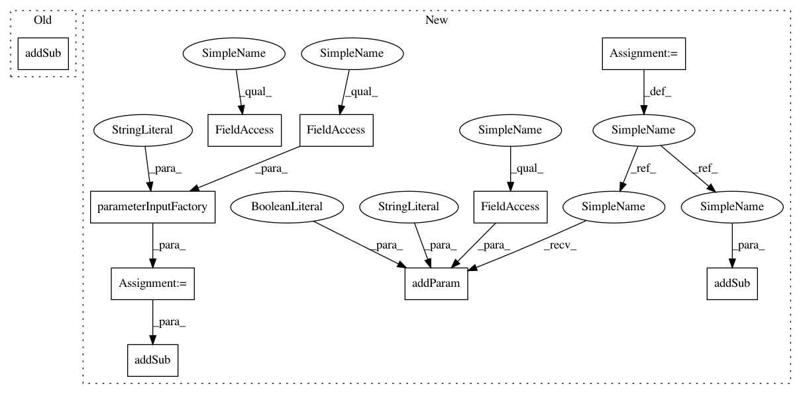

5c509111b8356adc8c0f9966f8f990a3a5e80cf1,framework/Samplers/MCMC/MCMC.py,MCMC,getInputSpecification,#Any#,67
Before Change
variable = inputSpecification.getSub("variable")
variable.addSub(InputData.parameterInputFactory("initial", contentType=InputTypes.FloatType,
descr=rinital value for given variable))
variable.addSub(InputData.assemblyInputFactory("proposal", contentType=InputTypes.StringType, strictMode=True,
printPriority=30,
descr=rname of the Distribution that is used as proposal distribution))
variable.addSub(InputData.assemblyInputFactory("probabilityFunction", contentType=InputTypes.StringType, strictMode=True,
printPriority=30,
descr=rname of the function that is used as prior distribution (doesn"t need to be normalized)))
inputSpecification.addSub(variable)
After Change
burnInInput = InputData.parameterInputFactory("burnIn", contentType=InputTypes.IntegerType,
descr=rThe number of samples that will be discarded)
samplerInitInput.addSub(burnInInput)
tune = InputData.parameterInputFactory("tune", contentType=InputTypes.BoolType,
descr=rThe option to tune the scaling parameter)
samplerInitInput.addSub(tune)
tuneInterval = InputData.parameterInputFactory("tuneInterval", contentType=InputTypes.IntegerType,
descr=rThe number of sample steps for each tuning of scaling parameter)
samplerInitInput.addSub(tuneInterval)
inputSpecification.addSub(samplerInitInput)
likelihoodInp = InputData.parameterInputFactory("likelihood",contentType=InputTypes.StringType,
printPriority=5,
descr=rOutput of likelihood function)
likelihoodInp.addParam("log", InputTypes.BoolType, required=False,
descr=rTrue if the user provided is the log likelihood, otherwise, treat it as
the standard likelihood)
inputSpecification.addSub(likelihoodInp)
// modify Sampler variable nodes
variable = inputSpecification.getSub("variable")
variable.addSub(InputData.parameterInputFactory("initial", contentType=InputTypes.FloatType,
descr=rinital value for given variable))
proposal = InputData.assemblyInputFactory("proposal", contentType=InputTypes.StringType, strictMode=True,
printPriority=30,
descr=rname of the Distribution that is used as proposal distribution)
proposal.addParam("dim", InputTypes.IntegerType, required=False,
descr=rfor an ND proposal distribution, indicates the dimension within the ND Distribution that corresponds
to this variable)
variable.addSub(proposal)
variable.addSub(InputData.assemblyInputFactory("probabilityFunction", contentType=InputTypes.StringType, strictMode=True,
printPriority=30,
descr=rname of the function that is used as prior distribution (doesn"t need to be normalized)))
inputSpecification.addSub(variable)
In pattern: SUPERPATTERN
Frequency: 3
Non-data size: 10
Instances
Project Name: idaholab/raven
Commit Name: 5c509111b8356adc8c0f9966f8f990a3a5e80cf1
Time: 2021-01-13
Author: congjian.wang@inl.gov
File Name: framework/Samplers/MCMC/MCMC.py
Class Name: MCMC
Method Name: getInputSpecification
Project Name: idaholab/raven
Commit Name: 5c509111b8356adc8c0f9966f8f990a3a5e80cf1
Time: 2021-01-13
Author: congjian.wang@inl.gov
File Name: framework/Samplers/MCMC/MCMC.py
Class Name: MCMC
Method Name: getInputSpecification
Project Name: idaholab/raven
Commit Name: beef868354b62c599dceb2a29558ed19f077ef4d
Time: 2020-07-29
Author: diego.mandelli@inl.gov
File Name: framework/PostProcessors/ParetoFrontierPostProcessor.py
Class Name: ParetoFrontier
Method Name: getInputSpecification
Project Name: idaholab/raven
Commit Name: b0fe385e1090ee95946c67d263105d3608635c54
Time: 2020-06-03
Author: Jia.Zhou@inl.gov
File Name: framework/Optimizers/Optimizer.py
Class Name: Optimizer
Method Name: getInputSpecification